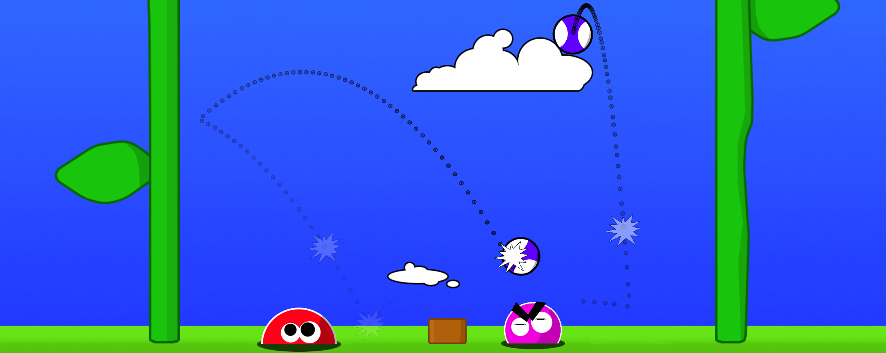
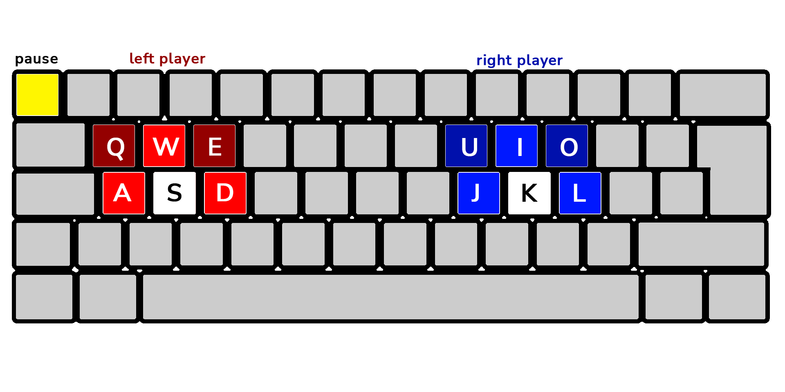

Basic moves are left, right, and jump. You can also grow or shrink your character with the keys alongside your jump key. For example, Q and E below.

If you're playing solo, you can use either side of the keyboard, or your arrow keys.
Playstation and Xbox controllers both work! This is 1000x better for head-to-head, so you can sit back and not cram over a keyboard.
Tippy Coco is a free, open-source game by Chris Coyne — source code. Inspired by Slime Volleyball, a 1999 Java applet by Daniel Wedge & Quin Pendragon. Music by Christian Rudder of Bishop Allen.